Laboratoire 3¶
Les notions abordées dans ce laboratoire sont les suivantes:
- Mathématique:
- Le reste de la division de nombres réels.
- Physique:
- Le fonctionnement d’un oscilloscope.
- La tension et le courant.
- La loi d’Ohm.
- La relation entre la tension et le courant d’un condensateur.
- Le circuit RC.
- La puissance.
Programme 4: L’oscilloscope¶
Ce projet consiste à programmer une application simulant un oscilloscope à quatre canaux. Celle-ci sera ensuite utilisée pour étudier le comportement de circuits électriques simples.
Principes de fonctionnement¶
L’oscilloscope est un appareil permettant de visualiser un signal électrique (ou plusieurs signaux). Celui que nous allons simuler fonctionne de la façon suivante:
- Un nombre fixé de fois par secondes (correspondant à la valeur
d’un paramètre
images_par_seconde), le contenu de son écran est rafraîchi. On peut fixer initialementimages_par_secondeà 25, quitte à devoir le réduire plus tard si la charge de calcul du programme devient prohibitive. - A chaque rafraîchissement de l’écran, l’oscilloscope observe
le signal pendant une durée égale à un paramètre
t_trame. Ce paramètre doit donc avoir une valeur inférieure au délai séparant deux rafraîchissements successifs de l’écran. - Pendant un intervalle d’observation du signal, ce dernier
est échantillonné périodiquement, le nombre d’échantillons
correspondant à la dimension horizontale de la fenêtre. La
période d’échantillonnage est notée
t_echantillons.
Par exemple, dans le cas où images_par_seconde vaut 25,
le délai entre deux rafraîchissements est égal
à 40 ms. Si t_trame vaut 10 ms et si la fenêtre fait 800 pixels
de large, t_echantillons sera égal à \(\frac{10}{800} =
12{,}5\) µs. La situation est illustrée ci-dessous, avec les
intervalles d’échantillonnage représentés en couleur.
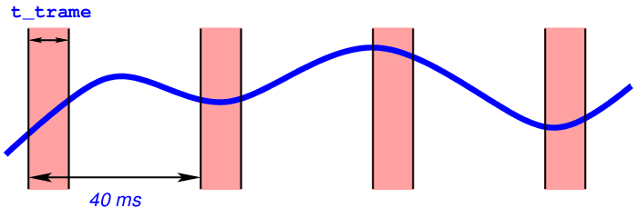Fonctionnement de l’oscilloscope.
{kind=link}
Programme de base¶
Vous pouvez partir d’un programme similaire à ceux des
laboratoires précédents, à recopier dans un fichier prog-4.py:
import math
import pygame
import sys
# Constantes
BLEUCLAIR = (127, 191, 255)
# Paramètres
dimensions_fenetre = (800, 600) # en pixels
images_par_seconde = 25
# Initialisation
pygame.init()
fenetre = pygame.display.set_mode(dimensions_fenetre)
pygame.display.set_caption("Programme 4")
horloge = pygame.time.Clock()
couleur_fond = BLEUCLAIR
while True:
for evenement in pygame.event.get():
if evenement.type == pygame.QUIT:
pygame.quit()
sys.exit()
fenetre.fill(couleur_fond)
pygame.display.flip()
horloge.tick(images_par_seconde)
La première étape consiste à afficher la grille de l’oscilloscope, qui sert de repère pour estimer la hauteur des signaux (verticalement) ainsi que les durées (horizontalement).
Pour ce faire, vous devez créer une fonction afficher_grille() qui
sera appelée dans la boucle principale du programme, et qui est
responsable de
dessiner une grille composée de lignes horizontales et verticales
grises espacées de 100 pixels. Chaque ligne est pointillée, sauf la
ligne horizontale située au centre de la fenêtre, qui fournira une
référence pour situer la valeur nulle des signaux. La longueur de chaque
trait d’un pointillé et l’espacement entre deux traits sont tous deux égaux à 10
pixels. Le résultat attendu est celui-ci:
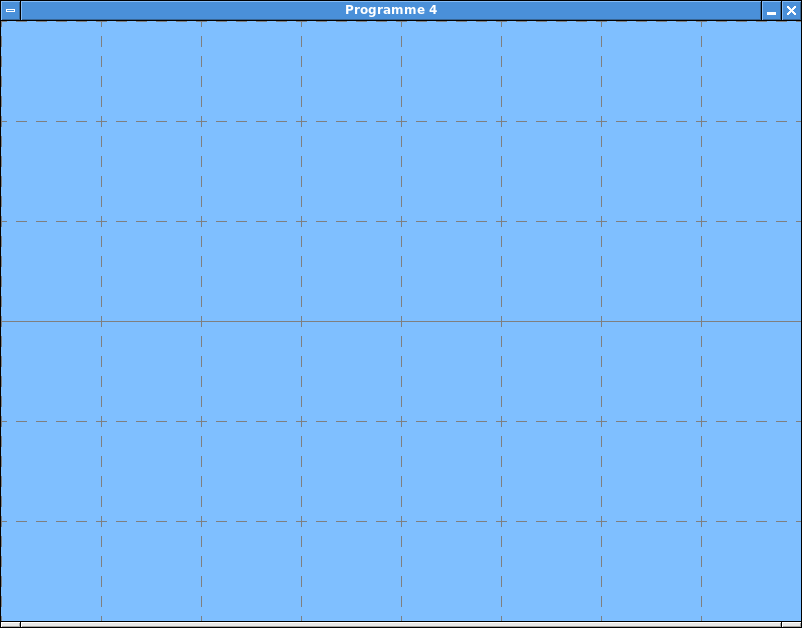Affichage de la grille.
{kind=link}
Échantillonnage du signal¶
Nous allons maintenant, à chaque rafraîchissement de l’image, simuler
un générateur de signal de façon à produire des échantillons qui
pourront être affichés. Attention, cette étape n’est pas triviale! La
principale difficulté est que nous allons simuler le générateur à
chaque instant (avec une granularité égale à t_echantillons), et
pas seulement pendant les périodes ou le signal est
échantillonné. Cette stratégie nous permettra plus tard d’étudier
le comportement de circuits électriques.
Procédure à suivre:
A chaque itération de la boucle principale du programme, appeler
pygame.time.get_ticks()pour obtenir l’instant courant, exprimé en millisecondes. Transmettre cet instant courant (en tant qu’argument) à une nouvelle fonctionafficher_trame(), après l’avoir converti en secondes. (Exprimer toutes les durées dans la même unité standard simplifiera les développements.)La fonction
afficher_trame(temps_maintenant)est donc chargée d’échantillonner le signal (ou les signaux) à partir detemps_maintenant, et de le ou les afficher dans la fenêtre. On peut l’implémenter de la façon suivante:Effectuer une boucle balayant à l’aide d’une variable
tl’intervalle de duréet_tramecommençant à l’instanttemps_maintenant, avec un pas égal àt_echantillons.Rappel:
t_echantillonscorrespond àt_tramedivisé par la dimension horizontale de la fenêtre. Cela signifie que cette boucle balaye l’ensemble des coordonnées horizontalesxde la fenêtre.Pour chaque instant
texploré par la boucle, appeler une fonctionacquisition(t)chargée de simuler la génération et l’échantillonnage des signaux à cet instant.Cette fonction
acquisition()sera construite de façon à retourner une liste de valeurs (une pour chaque signal). Dans ce projet, nous implémentons un oscilloscope à quatre canaux; cette fonction retournera donc une liste de quatre valeurs, qui sera récupérée parafficher_trame()et placée dans une variablesignaux.Dans la boucle interne à
afficher_trame(), pour chaque composantesdesignaux, appeler une fonctionafficher_signal(x, s, couleur, gain)chargée de l’afficher. Le paramètrexcorrespond à la coordonnée horizontale associée à l’instantt,sest la valeur du signal à afficher,couleurdonne la couleur à attribuer à ce signal, etgainest le facteur par lequel il faut multiplier le signal avant de l’afficher.Dans un premier temps, vous pouvez utiliser un gain de 20 et des couleurs bien différentes (par exemple: jaune, cyan, magenta et vert) pour chacun des quatre signaux.
Pour pouvoir tester votre programme, vous pouvez implémenter une première version de la fonction
acquisition(t)qui retourne simplement une liste constante, par exemple[2, 6, 10, -5].Implémenter la fonction
afficher_signal(x, s, couleur, gain). Celle-ci doit afficher un trait vertical de 10 pixels de hauteur, centré sur le point(x, y), dans la couleur spécifiée. La valeur deys’obtient en multipliantspargain, et en décalant le résultat de telle sorte qu’un signal égal à 0 apparaît sur la ligne située au centre de la fenêtre, un signal positif au dessus, et un signal négatif en dessous.Tester votre programme. A ce stade, son affichage devrait ressembler à celui-ci:
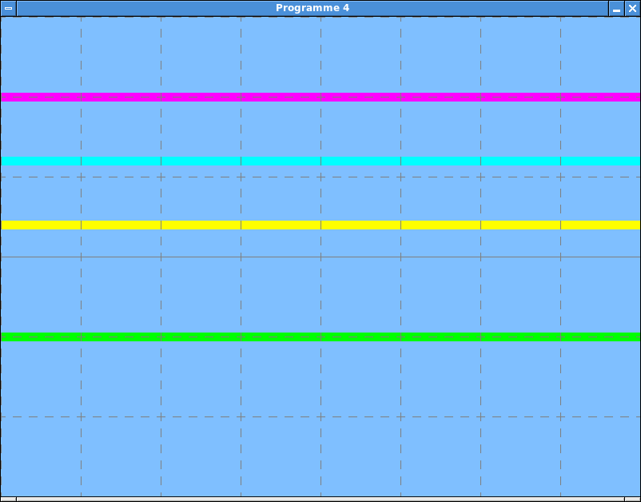Signaux constants.
L’étape suivante consiste à remplacer l’implémentation de la fonction
acquisition(t)par une version plus réaliste, qui simule la génération du signal à tous les instants. Il s’agit de l’étape la plus complexe. Pour commencer, vous allez dans cette fonction calculer la différencedelta_t_acquisitionentre la valeur actuelle detet celle de la précédente invocation de cette fonction (que l’on peut notert_prec).Toujours dans la fonction
acquisition(), sidelta_t_acquisitionest négatif, afficher un message d’erreur et terminer l’exécution du programme (en exécutantsys.exit()). Cette situation indique en effet que les paramètrest_trameetimages_par_secondede l’oscilloscope ne sont pas valides, l’affichage d’une trame nécessitant de revenir sur des parties du signal déjà échantillonnées lors de l’affichage de la trame précédente.Si
delta_t_acquisitionest positif ou nul, effectuer dansacquisition()une boucle explorant tous les instants supérieurs ou égaux àt_prec + t_echantillonset strictement inférieurs àt, avec un pas égal àt_echantillons. Pour chaque instantt_signalexploré, appeler une fonctiongenerer_signaux(t_signal).Note: Si
delta_t_acquisitionest très petit, il est possible qu’il n’y ait aucun instant de ce type.Enfin, appeler une dernière fois
generer_signaux()avectcomme argument. La listesignauxreçue comme résultat est celle qui doit être retournée par la fonctionacquisition().Il reste à implémenter la fonction
generer_signaux(t), dont le but est de simuler un générateur de quatre signaux, mesurés à l’instantt. Tout comme au point précédent, vous allez commencer par calculer la différencedtentre la valeur actuelle detet celle du précédent appel àgenerer_signaux(t).Grâce au mécanisme implémenté au point 8, la valeur de
dtdevrait toujours être inférieure ou égale àt_echantillons(vous pouvez le vérifier en affichant cette valeur). Cela va permettre d’effectuer une simulation incrémentale du générateur de signaux: L’état courant du simulateur va être mis à jour en calculant l’effet d’un laps de temps de duréedt.Pour tester le programme, on va créer un générateur de signaux périodiques. Chaque signal \(s_i\) sera de la forme
\[s_i(t) = A_i \cos\left(\frac{2\pi t}{T_i}\right),\]où \(A_i\) est son amplitude et \(T_i\) sa période. Pour \(i = 1, 2, 3, 4\), dans la fonction
generer_signaux():On va gérer une variable globale \(a_i\) initialisée à zéro, et représentant l’argument du cosinus.
Après avoir calculé
dt, on va mettre à jour \(a_i\) en exécutant\[a_i \,\leftarrow\, a_i + \frac{2 \pi \mathit{dt}}{T}.\]Pour ne pas perdre de précision si la valeur de \(a_i\) devient grande, on va remplacer cette valeur par le reste de sa division par \(2 \pi\).
Note: En Python, cette opération s’effectue à l’aide la fonction
math.fmod().La fonction
generer_signaux()doit finalement retourner une liste contenant \(A_i \cos a_i\) pour \(i = 1, 2, 3, 4\).
Tester soigneusement votre programme. En fixant les paramètres \(A_1 = 10\), \(T_1 = 0{,}009\) s, \(A_2 = 5\), \(T_2 = 0{,}003\) s, \(A_3 = 3\), \(T_3 = 0{,}0015\) s, \(A_4 = 2\) et \(T_4 = 0{,}0045\) s, le résultat devrait ressembler à celui-ci (toujours avec
t_trameégal à 10 ms):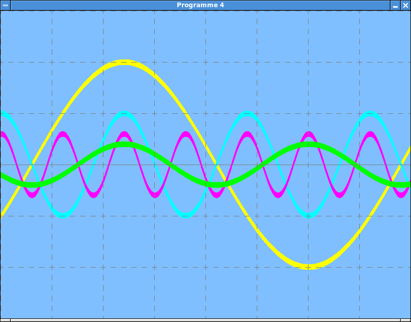Signaux périodiques.
Remarques:
- Il est normal que l’affichage ne soit pas stable.
- Si ce programme est trop gourmand en temps CPU pour votre ordinateur
(sous Linux, la commande
toppermet d’estimer sa charge), vous pouvez réduire le paramètreimages_par_seconde).
{kind=link}
{kind=link}
Le déclenchement¶
Avec la version actuelle du programme, il n’est pas facile de bien visualiser les signaux, car leur affichage n’est pas stable: La période de ces signaux n’étant pas un multiple entier du délai qui sépare deux rafraîchissements, ils apparaissent avec un décalage variable sur chaque image.
Pour éliminer cet inconvénient, les oscilloscopes disposent d’un mécanisme de déclenchement (trigger). L’idée consiste, lorsqu’on est prêt à afficher une nouvelle image, à attendre que le signal de référence dépasse un seuil donné pour commencer à l’échantillonner. De cette façon, si le signal est périodique, il sera toujours affiché avec le même décalage sur chaque image.
La marche à suivre pour implémenter ce mécanisme est la suivante:
Avant la boucle principale du programme, initialiser une variable
seuil_triggerreprésentant le seuil de déclenchement. Vous pouvez lui attribuer une valeur initiale de 5.Modifier la fonction
afficher_trame()de façon à attendre un déclenchement avant d’afficher le signal. Le plus simple consiste à programmer une nouvelle boucle juste avant celle qui se trouve déjà dans la fonction. Dans cette nouvelle boucle, il faut:- acquérir les quatre signaux en invoquant
acquisition(temps_maintenant). - tester si le premier signal (qui est celui qui sera utilisé pour
le déclenchement) possède une valeur supérieure ou égale à
seuil_trigger, et si sa valeur précédente était inférieure. Dans ce cas, les conditions sont réunies pour un déclenchement, et on sort immédiatement de la boucle. - incrémenter
temps_maintenantd’une durée égale àt_echantillons.
Après un certain nombre d’itérations de cette boucle, si aucun déclenchement ne s’est produit, on abandonne l’opération en interrompant la boucle. (Cela signifie que l’affichage du signal sera instable comme dans la version précédente du programme.) On peut fixer le nombre maximum d’itérations à effectuer comme étant égal à la dimension horizontale de la fenêtre (ce qui revient à choisir un délai maximum d’attente égal à la durée d’une trame).
Note: Dans ce cas, le délai entre deux rafraîchissements doit au moins être égal à deux fois la valeur de
t_trame.- acquérir les quatre signaux en invoquant
Tester le programme. L’affichage des signaux devrait maintenant être stable. (Un léger tremblement de l’image causé par la discrétisation de l’échantillonnage reste possible, comme pour les vrais oscilloscopes.) Au bord gauche de la fenêtre, le premier signal (en jaune sur la figure suivante) devrait commencer 100 pixels plus haut que la ligne médiane, avec une pente positive:
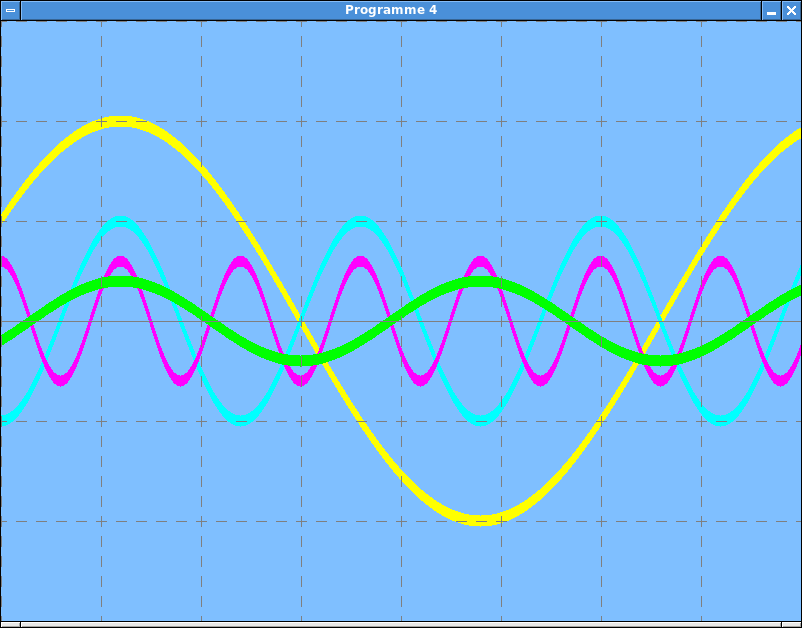Affichage déclenché.
{kind=link}
Le déclenchement réglable¶
Les vrais oscilloscopes permettent de régler leur seuil de déclenchement (ainsi que d’autres paramètres influençant celui-ci). Nous allons ajouter un tel mécanisme dans le programme.
Procédure à suivre:
Modifier le code responsable de la gestion des évènements de façon à récupérer les évènements de type
pygame.KEYDOWN:- Les frappes sur la flèche haute (
pygame.K_UP) doivent incrémenterseuil_triggerde 0.2. - De même, les frappes sur la flèche basse (
pygame.K_DOWN) doivent décrémenterseuil_triggerde 0.2.
- Les frappes sur la flèche haute (
Invoquer, dans la boucle principale du programme, une nouvelle fonction
afficher_trigger()chargée d’afficher la valeur courante du seuil de déclenchement. Implémenter cette fonction en dessinant un trait rouge près du bord gauche de la fenêtre, à la hauteur de déclenchement sélectionnée.Note: Il ne faut pas oublier que les signaux sont multipliés par un gain donné avant d’être affichés. Pour que le seuil de déclenchement soit affiché correctement, il faut donc le multiplier par le gain choisi pour le premier signal (qui est celui qui sert de base au mécanisme de déclenchement).
Avant d’entrer dans la boucle principale du programme, exécuter l’instruction
pygame.key.set_repeat(10, 10)activant la répétition des touches du clavier qui restent enfoncées.Tester votre programme. Voici un exemple d’affichage avec déclenchement (l’image est donc stable):
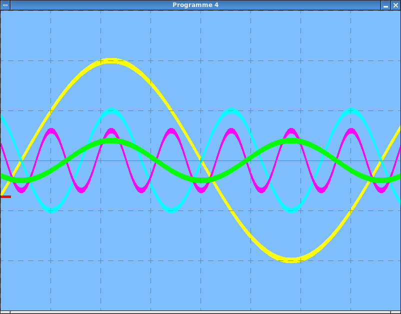Déclenchement réglable.
Lorsque le déclenchement n’a pas eu lieu, les signaux sont quand même affichés comme dans l’exemple ci-dessous, mais l’image n’est alors pas stable:
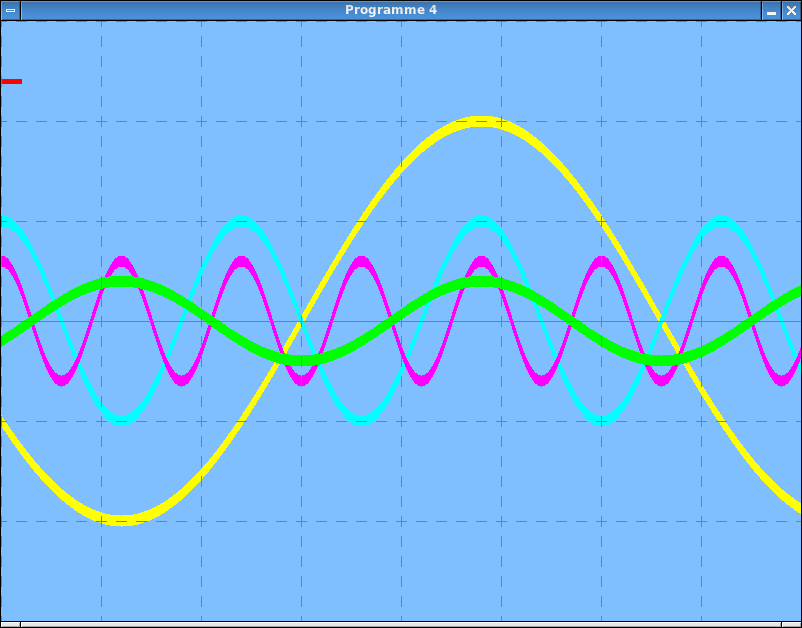Non déclenchement.
Si tout fonctionne comme prévu, déposer le programme dans le répertoire centralisé des laboratoires, avec le suffixe
prog-4.py.
{kind=link}
{kind=link}
Programmes 5 et 6: La loi d’Ohm¶
L’oscilloscope implémenté dans le programme 4 est un outil très général. Nous allons à présent l’employer pour étudier le comportement de quelques circuits électroniques.
Le premier circuit que nous allons considérer est celui-ci:
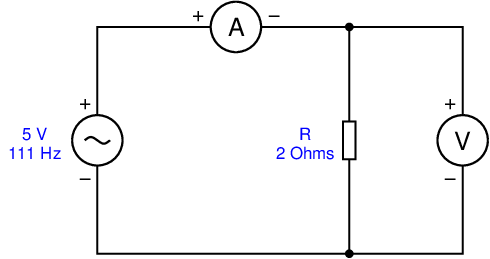Circuit R.
{kind=link}
Ce circuit est composé:
- d’un générateur de tension sinusoïdale, d’amplitude 5 V et de fréquence 111 Hz.
- d’une résistance \(R\) de 2 \(\Omega\) connectée aux bornes de ce générateur.
- d’un ampèremètre (“A”) mesurant le courant \(I\) traversant la résistance.
- d’un voltmètre (“V”) mesurant la tension \(V\) aux bornes de la résistance.
L’idée consiste à utiliser l’oscilloscope pour observer trois signaux:
- La tension \(V\).
- Le courant \(I\).
- La puissance \(P\) dissipée dans la résistance.
Remarque: Pour ce circuit, le quatrième signal ne sera pas utilisé; pour ne pas qu’il s’affiche, on lui attribuera une valeur constante qui sort de la fenêtre, par exemple 100.
Procédure à suivre:
Recopier le programme 4 dans un nouveau programme
prog-5.py.Modifier la fonction
generer_signaux():Le premier signal, correspondant à la tension \(V\), doit être un signal périodique similaire à ceux du programme 4, d’amplitude 5 V et de fréquence 111 Hz.
Le deuxième signal, représentant le courant \(I\), peut se calculer à partir de \(V\) grâce à la loi d’Ohm pour la résistance:
\[V = R \times I.\]Le troisième signal, égal à la puissance dans la résistance, vaut
\[P = V \times I.\]Comme discuté précédemment, le quatrième signal prend la valeur constante 100 de façon à ne pas être visible dans la fenêtre.
Essayer votre programme. Le résultat correspond-t-il à ce que vous attendiez?
Lorsque le programme fonctionne, le déposer dans le répertoire centralisé, avec le suffixe
prog-5.py.
Dans le programme 6, nous allons simuler une variante du circuit précédent:
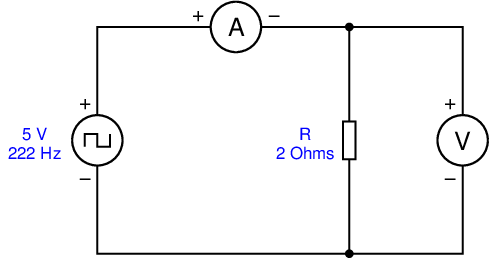Circuit R avec signal carré.
{kind=link}
La seule différence est que le générateur produit maintenant un signal carré d’amplitude 5 V et de fréquence 222 Hz. Cela signifie que ce signal est égal à 5 V pendant la moitié de sa période, et à 0 V pendant l’autre moitié.
Les modifications à apporter à votre code pour remplacer le signal sinusoïdal
par ce signal carré devraient être minimales. (En particulier, le calcul des
valeurs de \(I\) et de \(P\) devraient rester inchangés.) Le programme
fournit-il le résultat attendu? Si oui, déposez-le dans le répertoire centralisé,
avec le suffixe prog-6.py.
Programmes 7 et 8: Circuit RC¶
Dans cette dernière étape, nous étudierons un circuit RC, faisant intervenir une résistance et un condensateur. Son schéma est le suivant:
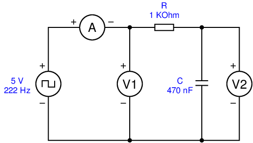Circuit RC.
{kind=link}
Nous nous intéressons à quatre signaux:
- La tension \(V_1\) produite par le générateur, qui prend comme pour le programme 6 la forme d’un signal carré de fréquence 222 Hz.
- La tension \(V_2\) aux bornes du condensateur.
- Le courant \(I\) traversant la résistance et le condensateur (mesuré par l’ampèremètre “A”).
- La puissance \(P\) échangée avec le condensateur.
Les modifications à apporter au programme 6 sont les suivantes
(effectuez-les dans un nouveau programme prog-7.py). Dans la
fonction generer_signaux():
La tension \(V_1\) est générée de la même façon que la tension \(V\) dans le programme 6.
La tension \(V_2\) dépend du niveau de charge du condensateur. Le plus simple consiste à représenter cette tension par une nouvelle variable globale
tension_condensateurqui sera gérée par la fonctiongenerer_signaux(). Initialement, on peut considérer que cette tension est nulle (c’est-à-dire, que le condensateur est déchargé au début de la simulation).A partir de \(V_1\) et de \(V_2\), le courant \(I\) peut se calculer en appliquant la loi d’Ohm aux bornes de la résistance:
\[I = \frac{V_1 - V_2}{R}.\]La valeur du courant \(I\) permet de mettre à jour la tension du condensateur, celui-ci se chargeant si \(I\) est positif et se déchargeant s’il est négatif; Pendant le pas de temps \(\textit{dt}\) de la simulation, la tension \(V_2\) (mémorisée dans
tension_condensateur) doit évoluer selon la loi:\[V_2 \,\leftarrow\, V_2 + \frac{I\textit{dt}}{C}.\]La puissance échangée avec le condensateur est donnée par le produit
\[P = V_2 \times I.\]
Note importante: Pour que les signaux 3 et 4 soient visibles, vous devez modifier le gain qui leur est appliqué dans le programme. Pour les valeurs proposées des composants, un gain de 20000 pour ces deux signaux produit un bon résultat.
Après avoir implémenté ces modifications dans votre programme, qu’observez-vous? N’hésitez pas à expérimenter en modifiant la valeur de R et de C. Les signaux obtenus correspondent-ils à ce que prévoit la théorie?
Une fois que votre programme est au point,
déposez-le dans le répertoire des laboratoires, avec le suffixe
prog-7.py.
Il reste à présent à simuler le même circuit, mais avec un générateur sinusoïdal:
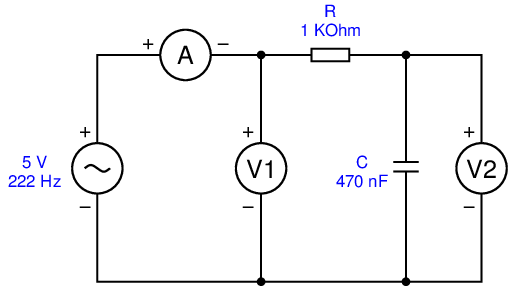Circuit RC avec signal sinusoïdal.
{kind=link}
Les modifications à apporter au programme sont simples. Cette fois,
avant de les effectuer et de tester l’application, essayez de dessiner
sur une feuille de papier la forme des quatre signaux qui devraient être
obtenus. Comparez ensuite vos prédictions avec le résultat de l’expérience.
Déposez enfin votre programme dans le répertoire centralisé, avec le
suffixe prog-8.py.